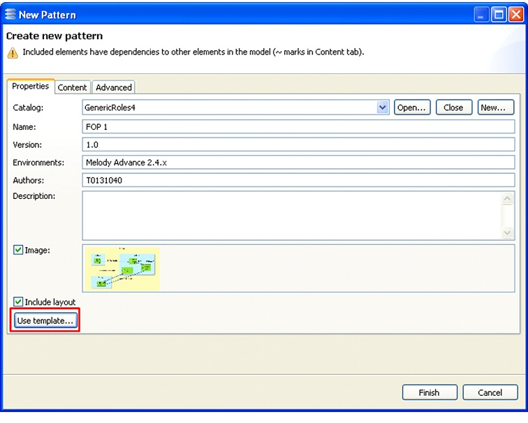

Template Usage
To use a template, start a normal pattern creation process like in the example below.

In the “Properties” tab, click the “Use template…” button.

The action may fail if more than one element was selected or, more generally, if there is an ambiguity about the main element of the pattern. An error message indicates that this can be solved by mapping the main element to the first role of the pattern.
When the action succeeds, a new dialog pops up which allows the user to select the template to use.

If the “Only show strictly compatible templates” check box is ticked, only templates whose main element is of the same type as in the pattern are shown. It can be relevant to disable this option, for example when the user has defined a template that gathers the Interfaces of a Logical Component and he/she wants to use it on a Physical Component.
When “Finish” is clicked, the template is actually executed and a new dialog shows up.

This “Template Usage” dialog shows the elements that have been collected for each role and proposes a few options for integrating them to the pattern under construction.
- “Include children elements”: whether the children of the collected elements must also be included in the pattern.
- “Exclude other elements”: whether the pattern elements other than those that have been collected must be excluded from the pattern.
- “Delete other roles”: if the previous option is disabled, whether existing roles of the pattern must be deleted so that only those from the template are kept.
- “Override main role”: whether properties such as name, description, Container Derivation Rule of the main role of the pattern must be replaced by the properties of the main role of the template.
- “Keep empty roles”: whether template roles that have collected no element must be included in the pattern.
- “Keep rules for application”: whether the Element Collection Rules of the template roles must be copied as Target Derivation Rules of the pattern roles
(see section “Role details”).
When “OK” is clicked, the pattern is updated according to the previous dialog. In the figure below, the default options have been used to that the pattern is structured exactly as the template.

The pattern can be freely modified after the template has been used. When ready, click “Finish” as usual to actually create the pattern.
Warning: Do not forget to select graphical elements in the diagram before creating the pattern in order to reuse the graphical layout of the collected elements.